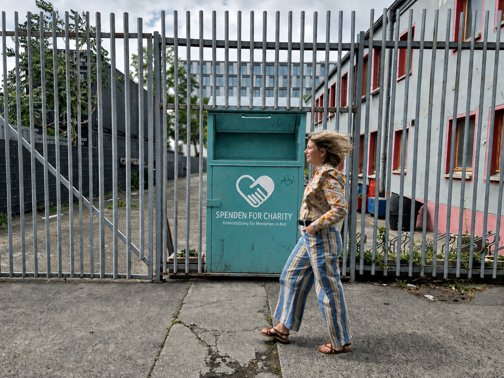
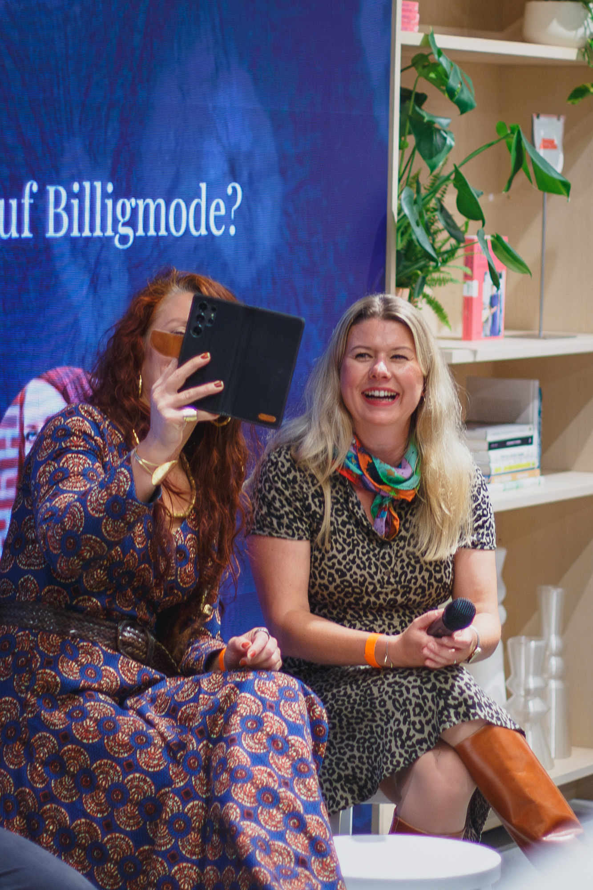

Beraterin · Speakerin · Visionärin
Annett
Kaplow
Expertin für Charity Shops, textile Kreisläufe und kreative Weiterentwicklung. Beraterin mit einem klaren Blick für Wirkung, soziale Teilhabe und Wirtschaftlichkeit.
Innovationsmotor an, mein Angebot
Mein Angebot für soziale Second-Hand-Strukturen, gemeinnützige Shops und lokale Initiativen.
Moderierte Veränderungswerkstatt
Vom Aufbau eines neuen Projekts bis zu Visionsworkshops. Gemeinsam erarbeiten wir Veränderungsprozesse für Ihre Organisation.
Inklusive und kreative Teamarbeit
Durch ein maßgeschneidertes Angebot werden die gemeinsame Arbeitskultur, Zusammenarbeit und Kommunikation verbessert.
Zielentwicklung
Gemeinsam entwickeln wir eine tragfähige Vision und einen realistischen Ablaufplan für Ihre Initiative.
Speakerin und Moderation
Fachpräsentationen zu Charity-Shop-Gestaltung und Logistik, Marketing und Strategien sowie Moderation für Workshops.
Über mich

- Sozialarbeiterin M.A.
- Kreative Workshops für Kinder, geflüchtete Frauen und Teams
- Gründerin des inklusiven Modelabels „SUERE“
- Expertin für nachhaltige Entwicklung in Fashion, Alttextilien & Second Hand im Gemeinwesen
- 2017–2022 Referentin für textile Kreislaufwirtschaft, DRK-Generalsekretariat
- Seit 2022 Leitung Textilhafen (BSM) — Politik, Networking & Projektentwicklung
- Seit 2025 Beratungstätigkeit für Unternehmen im Second-Hand- & Textilbereich
Textilkreislaufexpertin, Beraterin und Speakerin mit langjähriger Erfahrung in der Arbeit mit und für Wohlfahrtsorganisationen.
Durch die Gründung meines inklusiven Modelabels SUERE weiß ich, was es heißt, als Unternehmerin alle Felder von Marketing bis Kollektionsentwicklung zu bespielen. Als langjährige Co-Leiterin des Textilhafens der Komm und Sieh gGmbH, dem Inklusionsunternehmen der Berliner Stadtmission, bin ich täglich mit den praktischen Herausforderungen und Potenzialen textiler Kreisläufe konfrontiert: von Spendenlogistik, der Sortierung und Weiterverwertung bis hin zu sozialer Teilhabe und Begegnung.
Mein Fokus liegt auf der Verbindung von Nachhaltigkeit und sozialer Wirkung im Textilbereich und der Prozessoptimierung durch Kreativität. Ich begreife soziale Second-Hand-Strukturen, gemeinnützige Shops und lokale Initiativen als zentrale Knotenpunkte, die Zugang schaffen, Ressourcen schonen und Räume für Austausch und gesellschaftliche Teilhabe eröffnen. Neben Kreativworkshops mit Textilien für alle Altersklassen oder die Umsetzung von Ausstellungen in Museen in Zusammenarbeit mit den Berliner Kunsthochschulen, erarbeite ich u. a. ein Arbeitsheft für Kinder im Grundschulalter zum Thema „Textile Lebenszyklen verstehen" (gefördert durch die Stiftung Naturschutz Berlin).
„Echte Transformation entsteht dort, wo ökologische und soziale Fragen zusammen gedacht und praktisch umgesetzt werden."

Interviews und Interessantes über meine Arbeit
Gespräche, Beiträge und Auftritte rund um textile Kreisläufe, soziale Wirkung und nachhaltige Mode.
Kontakt
Sie möchten ein Projekt voranbringen, einen Workshop planen oder mich als Speakerin anfragen? Schreiben Sie mir gern.
-
E-Mail
-
TerminBeratung & Speaking auf Anfrage
-
StandortBerlin